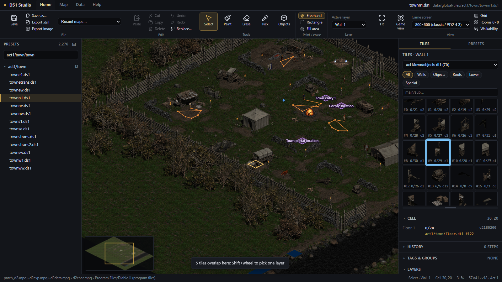
DS1 Studio opens the map presets (DS1 files) of classic Diablo II and your mod straight from the game's files, draws them the way the game does, and lets you edit their tiles, objects, the game's level tables, the automap and the tile libraries (DT1 files) themselves. See the Glossary for any term you don't know.
Download the latest version from the Releases page on GitHub:
| System | File | Notes |
|---|---|---|
| Windows 10/11 | …_x64-setup.exe | Recommended. Installs for your user and updates itself. |
…_x64_en-US.msi | For managed installs. | |
| Linux | ….AppImage | Runs on most distributions; make it executable and double-click. Updates itself. |
….deb / ….rpm | Debian/Ubuntu, Fedora/openSUSE packages. |
The first time it runs, DS1 Studio asks for two folders:
d2data.mpq, d2exp.mpq and patch_d2.mpq. It is only ever read.data/ tree. This is where everything you save goes (see Saving). Tick Also read the mod folder's own .mpq files if your mod ships its data in MPQs.On Linux, point it at the Diablo II folder inside your Wine prefix. You can change the folders later with Home → File → Folders… Nothing else is needed: object names and sprites come from the game's own files, and special tiles get DS1 Studio's own markers.
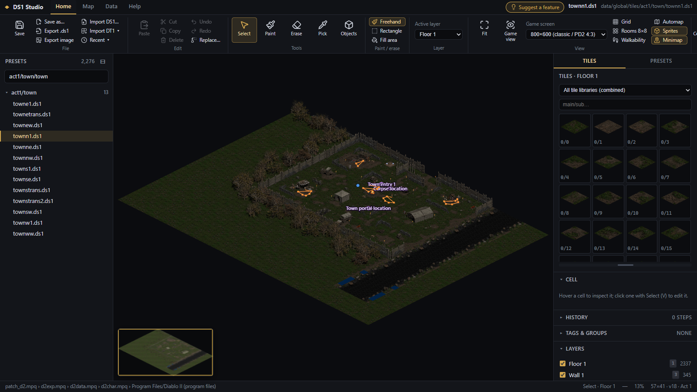
1 2 3 4 5 6 7 8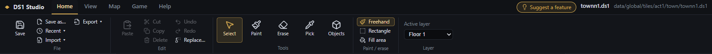
act1/town or arcane.LvlPrest.txt → Levels.txt → LvlTypes.txt) and the right act palette.You can also reopen a recent map (1.7), create a new one (3.9) or import one (7.1).
Save (Ctrl+S) writes the map into your mod folder, under the same path it has in the game. If a file is replaced, the original is kept next to it as <name>.bak (only the first time, so the true original survives). Save as… saves under a new path. Your Diablo II install is never written to.
Everything else DS1 Studio writes — edited DT1s, .txt tables, presets — also goes into the mod folder with the same .bak safety. See Safety and troubleshooting.
While a map has unsaved changes, DS1 Studio keeps a copy of it every 20 seconds in its own storage (never in your game or mod folders). If the app crashes or is closed without saving:
Saving, or undoing back to the saved state, removes the kept copy.
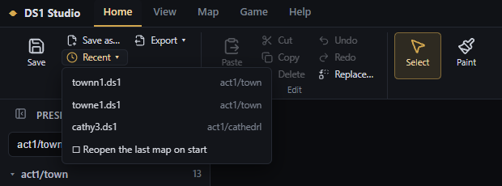
Home → File → Recent ▾ lists the maps you opened last; the start page lists them too. Tick Reopen the last map on start to have your last map open automatically.
The app checks GitHub once a day and tells you when a new version is out. Help → Check for updates downloads and installs it and restarts DS1 Studio. Help → About shows the version and build.
| Zoom | Mouse wheel (zooms around the mouse) |
| Pan | Arrow keys (Shift = faster), Space + drag, or drag with the middle or right mouse button |
| Fit the whole map | F |
| Jump anywhere | Click or drag on the minimap |
At 100% you see exactly the game's pixels; zoomed out, tiles are properly downscaled instead of turning grainy.
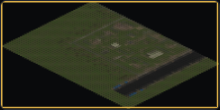
The bottom-left corner shows the whole map with the visible area outlined. Click or drag on it to move the view there. Toggle it with K or View → Minimap.
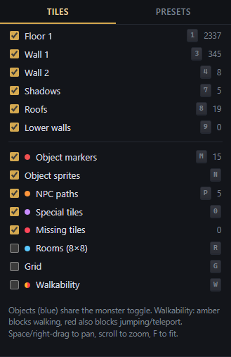
A map has up to 2 floor layers, 4 wall layers (walls, roofs, lower walls, special tiles, trees and objects that are tiles), shadows, and optionally a tag layer.
The Layers panel shows or hides each one and says how many cells it uses. The number keys toggle them too: 1/2 floors, 3–6 walls, 7 shadows, 8 roofs, 9 lower walls, 0 special tiles.
Hiding a layer only affects the view. To edit a layer, make it the active layer (3.1).
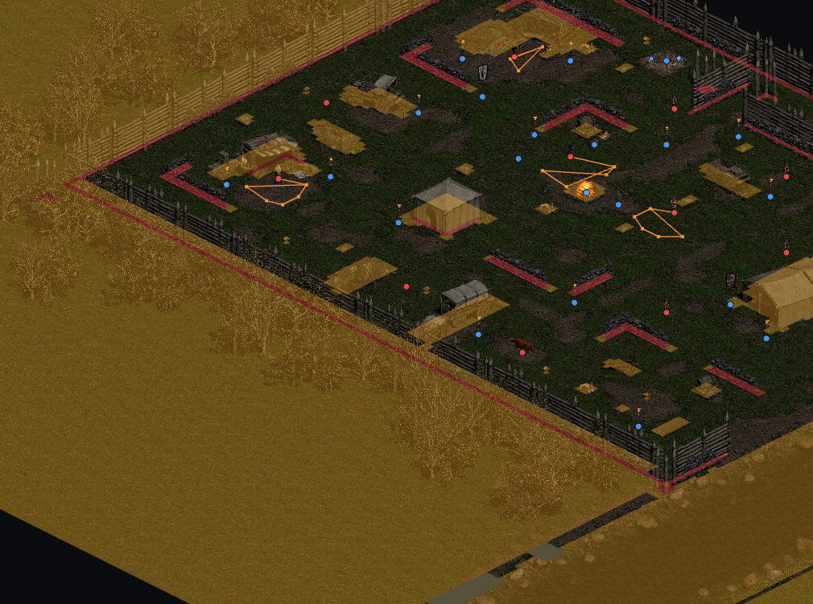
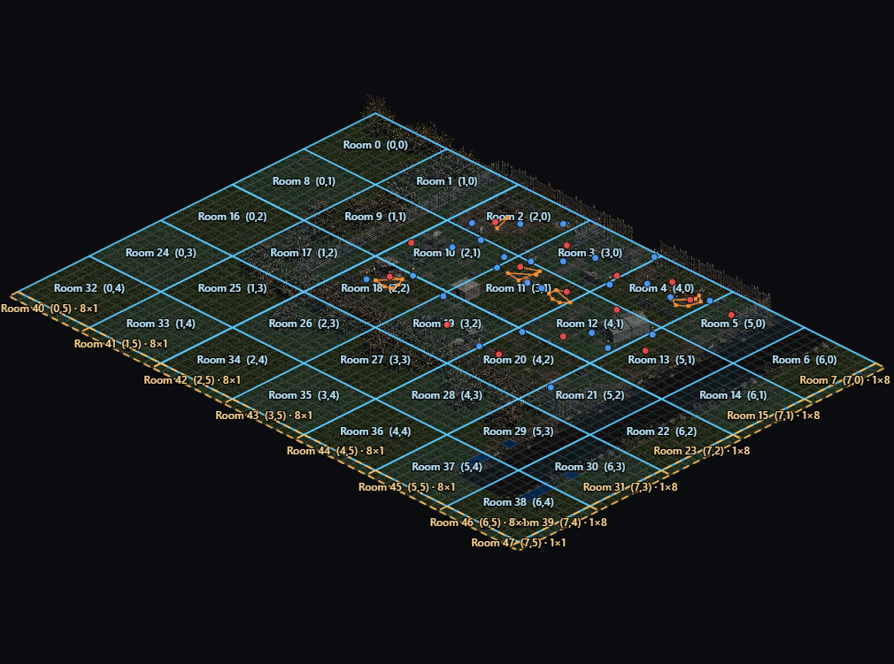
Automap (A) draws the in-game automap over the map, as players will see it (see The automap).
Level light (Layers panel) draws the map as brightly and in the colour the game lights its level: Levels.txt's Intensity (1-255) and Red/Green/Blue; 0 means the act's own daylight, as towns and outdoor levels use. The Map panel shows and changes them (Level light: slider, colour, Apply to Levels.txt), previewing while you move the slider. In game the player's own light radius also brightens the area around them.
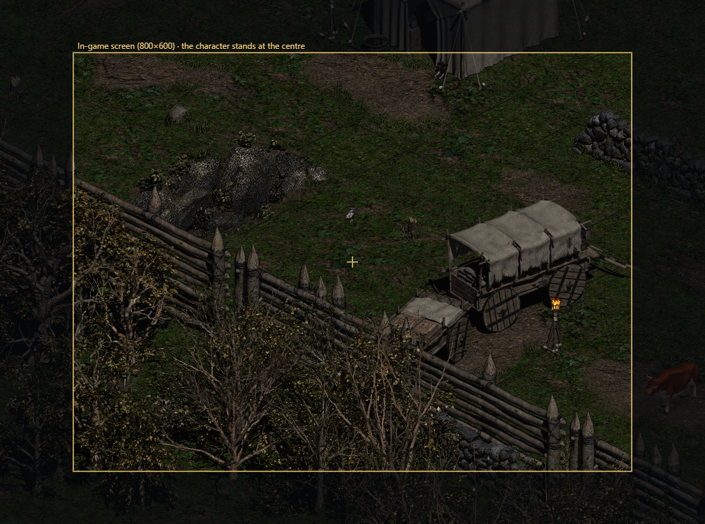
Game view (Z) zooms to exactly what the character sees in game, centred on the selection, and shades everything else. Pick the screen size next to it: 640×480, 800×600, PD2's widescreen sizes, or a custom size.
Objects and NPCs are drawn with their real sprites, animated at the game's speeds, with fire, glows, magic and fog blended as in game. Sprites (N) toggles the sprites, M the object markers, P the NPC paths. Animated floor tiles (water, lava) animate too. See Objects and NPCs for editing them.
Special tiles are invisible in game: they mark warps, where players arrive in town or on a map, the corpse and town-portal spots. DS1 Studio draws a labelled marker on each, e.g. Town entry 1, Map entry, Corpse location. Warps show where they lead, e.g. Warp · link 1 → Catacombs Level 1; see Warps: connecting maps.
When a player walks into a building, the game fades its roof. This is set by a hide area: two special tiles (main index 8–29) at opposite corners of the inside, whose sub index is the main index of the tiles that fade. Every wall-layer tile with that number in the area, plus one cell around it, fades while the player stands inside. The trigger is the rectangle, grown or shrunk toward the south and east by LvlPrest's PopPad (in sub-tiles; the game's houses use −4). The game ignores hide areas unless LvlPrest's Pops counts them.
Pops/PopPad. The dialog also lists and removes existing areas.Pops 0 or too small) and markers it would merge into one rectangle, such as the same number used for two buildings.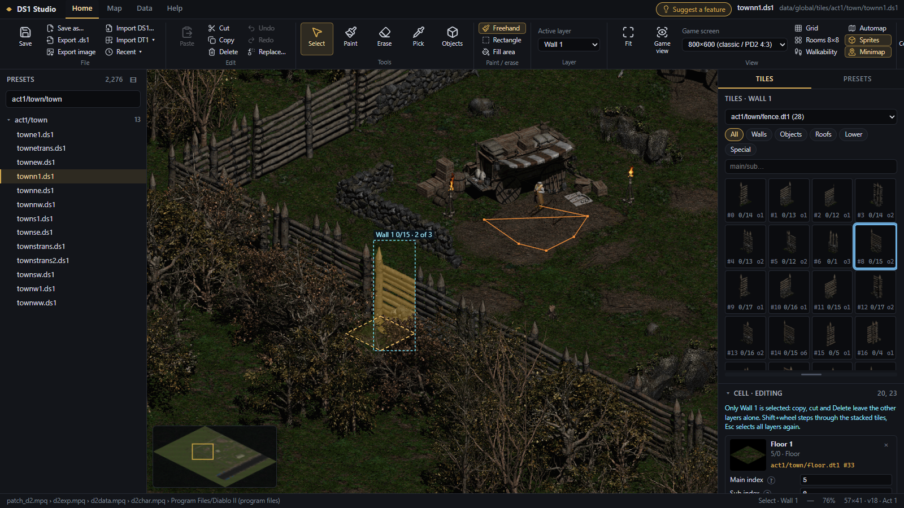
Trees over trees, a wall over a floor: when several tiles overlap under the mouse, hold Shift and turn the mouse wheel to step through them one at a time. Only that tile's layer is selected, so Copy, Cut and Delete leave the others alone; Esc selects all layers again. Clicking a tile also shows it in its DT1 in the Tiles panel.
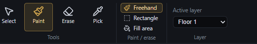
| Tool | Key | What it does |
|---|---|---|
| Select | V | Click a cell to inspect and edit it in the Cell panel; drag to select an area; Shift+click or Shift+drag adds to it (3.4). |
| Paint | B | Paints the tile chosen in the Tiles panel on the active layer. |
| Erase | E | Clears cells on the active layer. |
| Pick | I | Click a tile on the map to paint with it. |
| Objects | O | Select, move, add and delete objects and NPCs (chapter 4). Tab switches between tile and object editing. |
The Active layer list chooses which layer Paint, Erase, Fill and Clear work on. Floors take floor tiles; wall layers take walls, roofs, lower walls, trees, objects and special tiles.
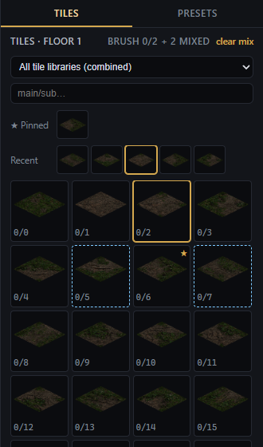
The Tiles panel shows every tile the map's libraries provide for the active layer.
Paint and Erase work in three ways, chosen in the Paint / erase group:
| Mode | Key | How |
|---|---|---|
| Freehand | B | Paints the cells the mouse passes over. |
| Rectangle | U | Drag a rectangle; it's all painted (or erased) when you let go. |
| Fill area | L | Click a cell: the connected area of the same tile is filled. If you click inside a selection, the fill stays inside it. |
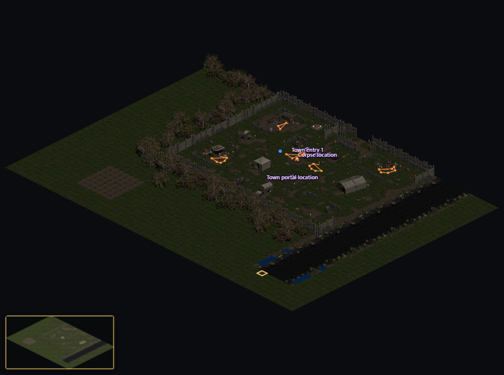
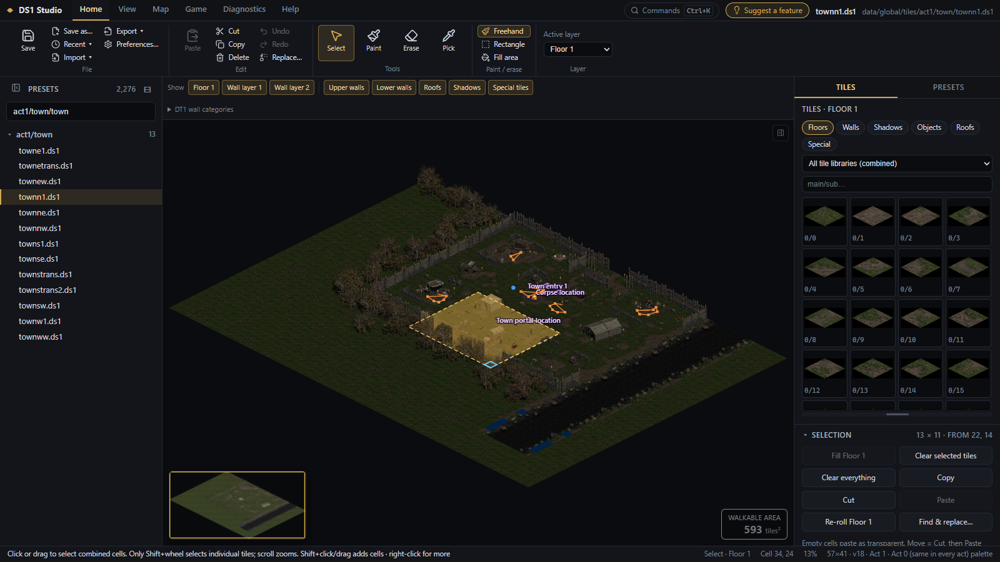
With Select (V), drag over the map to select cells, or press Ctrl+A for the whole map. Hold Shift to add to the selection: Shift+click adds one cell, Shift+drag adds a rectangle, so you can select any shape (an L-shaped room, a winding path). Everything below then works on just the selected cells. The Selection panel then offers:
Empty cells paste as transparent. Hold Alt when you click to paste to stack the paste onto what's there (into the next free layer, adding layers as needed) instead of replacing it. Pasting into another map that doesn't load the copied tiles' DT1s offers to add them. Esc first drops what's on the cursor (a paste, an object, the paint tile), then deselects.
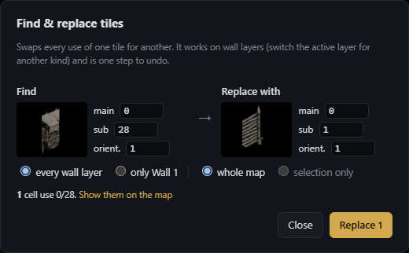
Find & replace (Ctrl+H, or Replace… on the ribbon) swaps every use of one tile for another, on every layer of the active kind or only the active layer, in the whole map or the selection. It starts with the selected cell's tile and your brush; Show them on the map marks every match. One step to undo.
Re-roll (Selection panel) mixes up the active layer inside the selection: each tile becomes a random tile of the same group (main index) already used there, so repeats are less visible. It never brings in tiles that weren't there.
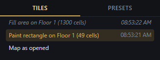
Ctrl+Z undoes and Ctrl+Y redoes, without limit. The History panel lists every step by name (“Paint rectangle on Floor 1 (36 cells)”, “Paste 57×41 + 32 objects”…); click one to go back — or forward — to just after it. Map as opened undoes everything. Undoing back to the saved state counts as saved again.
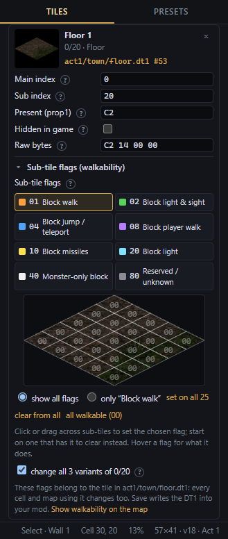
Click a single cell with Select to edit everything in it. Each layer that has a tile is a card with the tile's picture and the DT1 it comes from (click the file name to show it in the Tiles panel). Every field has a ? that explains it:
Empty layers are one line with Add (puts your brush tile there). × clears a layer. Warp tiles also show where they lead (chapter 6).
Painting walkability on the map (this map only). Turn on Walkability (W): the side panels make way for the Walkability panel and the map shows every sub-tile (5×5 per cell) that blocks walking (amber) or jumping and teleporting too (red). Choose Blocked or Walkable, what it blocks or allows (walking, jumping & teleport, sight & light, players only) and a brush (1×1, 3×3, 5×5 sub-tiles or a whole cell), then click or drag over the map. Shift+drag paints a rectangle and holding Ctrl does the opposite. Each stroke is one undo step; Done brings the other panels back.
It changes nothing for other maps. The game adds up the sub-tile flags of every tile in a cell, hidden tiles included, so blocking puts an invisible floor tile holding just those flags into a free floor layer of the cell (like Tal Rasha's tomb's own blockers), and making a sub-tile walkable that a tile blocks gives that cell its own copy of the tile without the flag (same picture and variants; a north-corner wall's other half comes along). Both go into a small tile library made for the map, <map>_walk.dt1 next to it, which is added to the map's tile libraries and level type. A cell whose two floor layers both hold real tiles has no room for a blocker; the panel says which cells it skipped.
Changing a tile everywhere. To change the flags of a tile itself, for every cell and map using it, use the Cell panel:
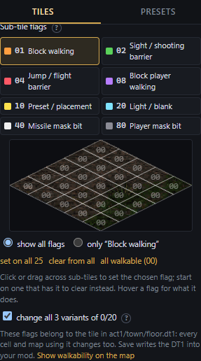
Every tile has 25 sub-tiles (a 5×5 grid over its floor diamond) whose flags decide where units can walk, see, shoot and teleport. Under each card, Sub-tile flags (walkability) shows them on the tile:
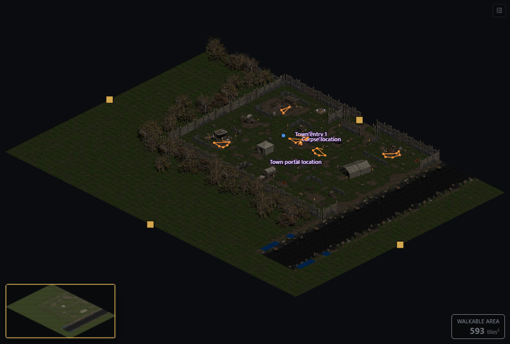
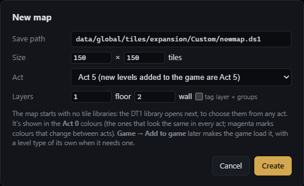
Map → Resize shows handles on the four edges: drag them to add or remove cells (objects move with the cells). Resize… does it by numbers. Map → New map creates an empty map for a level type, size, act and number of layers; it's saved where Save path says. Use Add to game to make the game load it.
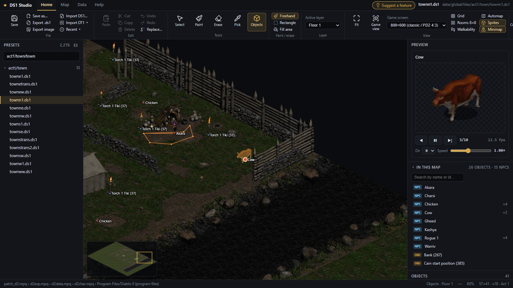
The list is the act's placeable objects and NPCs, worked out from the game's own tables (and your mod's).
In object mode, drag an object to move it; Delete removes the selected one. The Preview panel animates the selected object in every direction. The Object panel edits its type, id, position, flags and its NPC path (the points an NPC walks between).
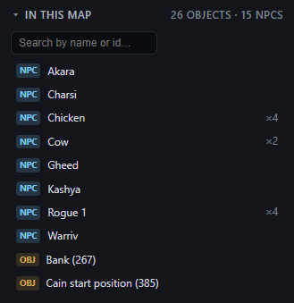
In this map lists everything placed, grouped by name with a count (Chicken ×4…). Type to search by name or id. Click a name to select it and centre the view on it; click again for the next one of that kind.
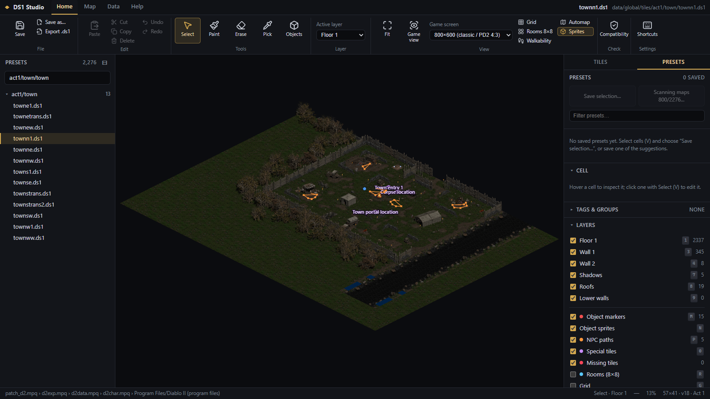
A preset is a reusable piece of map — a building, a wall run, a group of trees.
Open the panel with the Presets tab next to Tiles, or Map → Presets.
In Diablo II each map preset is its own level, and levels are joined by warps. A warp special tile with main index N (0–7) uses its level's link N: Levels.txt column VisN says which level it leads to, and WarpN which kind of warp it is (a LvlWarp.txt row: stairs, cave entrance…). DS1 Studio reads and edits these for you.
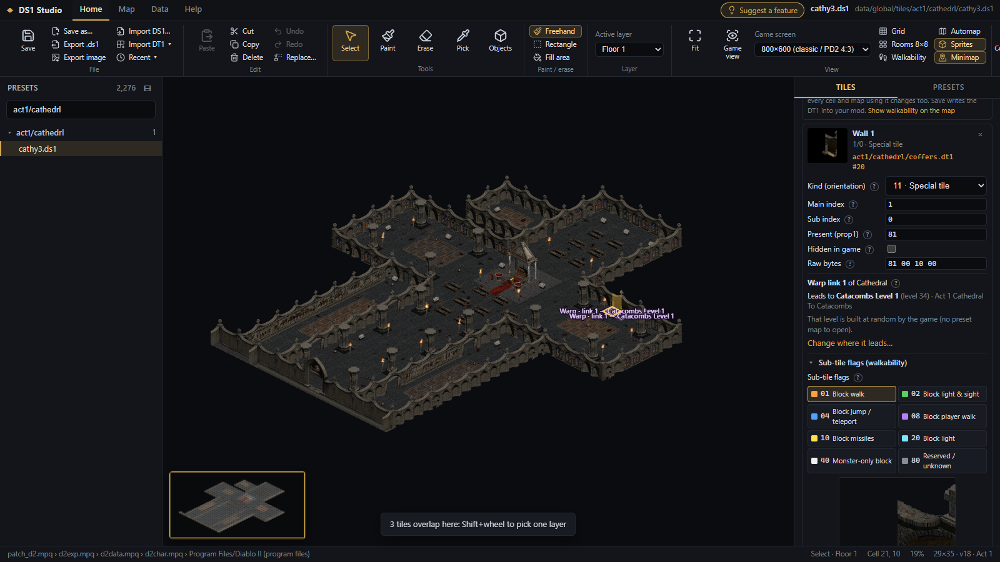
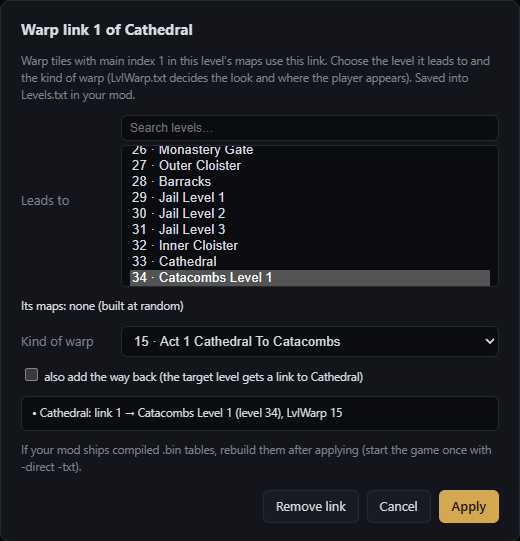
Levels.txt in your mod. Remove link clears it..bin tables, rebuild them afterwards (see 12.3).Bring maps and tile libraries from anywhere on your computer into your mod, with the game's tables updated so they load without crashing. Both are on Home → File.
.ds1 file. It's checked first: a file the game couldn't read is refused. (A map package .zip from Export map can be picked here too: it opens the package import, tables included.).ds1 on its own brings none of its rows from the game's tables (Levels, LvlPrest, LvlTypes, CubeMain, AutoMap), so a warning says your own are used as they are: if they don't match the map and its tile libraries, the game can crash when it loads or while walking in it. Add it to the game afterwards and run the Compatibility check.- and _). It will be saved as expansion/Map/<name>.ds1.PD2assets/<folder>/ (keeping the paths the map names) and the map is pointed at them. With add it to the game next ticked, Add to game opens, pre-filled with a level that uses the same tiles — click Apply.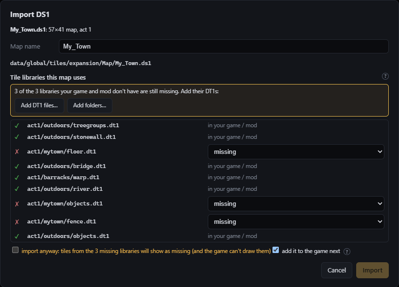
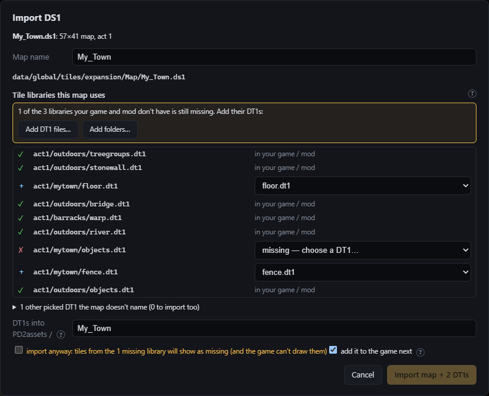
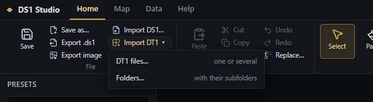
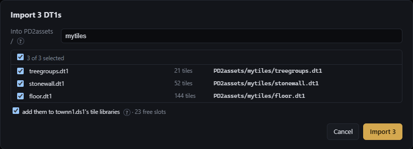
.dt1 inside, subfolders included).PD2assets/ they go into. Keep the folder structure keeps the picked folders' subfolders..bak). Untick any you don't want.File slot of the map's level type and in its Dt1Mask, so the game loads them. The free slots are shown; a level type has 32.Import DT1 ▾ → From game library… lists every tile library the game and your mods already have, by folder, with a search box (the map's own libraries first). Click one to see all its tiles, filtered by kind; rest the pointer on a tile to see it enlarged, click it for its details. The tiles are shown in the library's own act colours; Colours switches to the map's act, or to Act 0, which shows in magenta the colours that change between acts. Choose this library for each one you want, then Add to the map: nothing is copied (the files are already in the game), and the map's level type and Dt1Mask are updated as in Tile libraries.
Switch the window to Build a custom DT1 to put together a new tile library from single tiles of any others.
_: spaces, dots, dashes and accents can break the game's tables and archives. The whole path has to fit the game's 41-character limit for tile paths, so the window says how long it may be. It goes into PD2assets/custom/ unless you change the folder.What the new library gets:
File slot of the map's level type and its Dt1Mask (a level type of its own if other levels share it, as in Tile libraries), and each tile's AutoMap.txt pieces are copied from the level it came from under its new number. Originals are kept as .bak.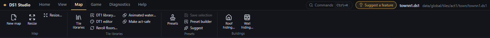
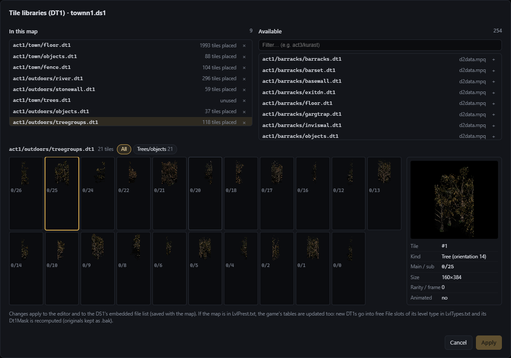
Map → Tile libraries adds or removes DT1s for the map and lets you browse every tile of any DT1 before adding it. DS1 Studio keeps the game in step: new DT1s go into free File slots of the level type (LvlTypes.txt) and the map's Dt1Mask (LvlPrest.txt) is recomputed. When two loaded DT1s have the same tile, the one listed later replaces it, as in the game.
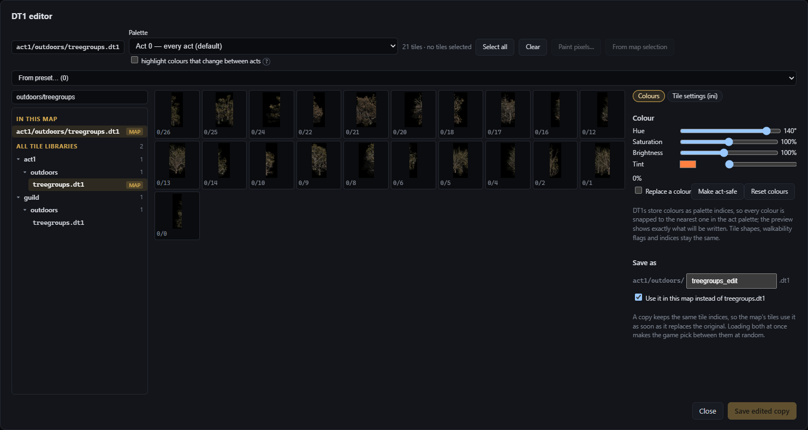
Map → DT1 editor edits a copy of any DT1: choose it in the tree on the left (every library in the game and mod, by folder), select tiles (Shift+click for a range, or From preset / From map selection), and edit their colours (8.3), pixels (8.4) or settings (8.5). Clicking a tile opens it in a zoom window you can move, resize and zoom to single pixels. Save writes a copy under a new name, or overwrites the original, and can switch your map over to it with the tables updated.
About 30 of the palette's colours change between acts, so tiles drawn for one act (say Act 1) can show red or purple patches in a map of another act, here and in game. Map → Make act-safe lists every DT1 the map uses, how many of its pixels use act-specific colours, and a now / after preview. For each DT1, choose the act it was drawn for so the after preview looks right, then click Convert. The DT1s are saved into your mod with .bak copies, and every map using them gets the new colours.
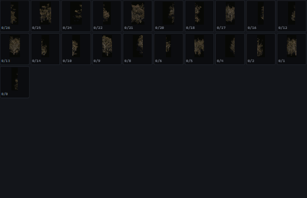
Hue, saturation, brightness, tint, and replace a colour — for the whole file, the selected tiles, a preset's tiles, or the tiles in your map selection. The preview is exact.
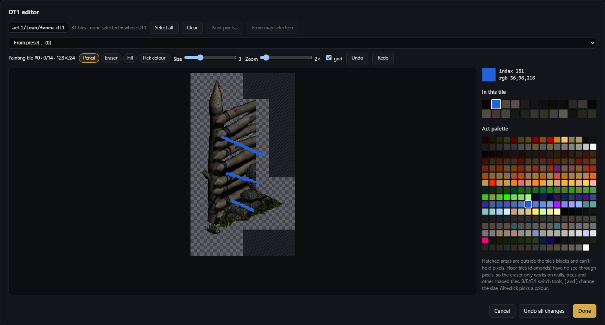
Double-click a tile (or Paint pixels…) to paint it pixel by pixel. Only the tile's real pixels can be painted.
| Pencil / eraser / fill / colour picker | B E G I |
| Brush size | [ ] |
| Pick a colour | Alt+click |
| Undo / redo | Ctrl+Z / Ctrl+Y |
| Zoom | Ctrl+wheel |
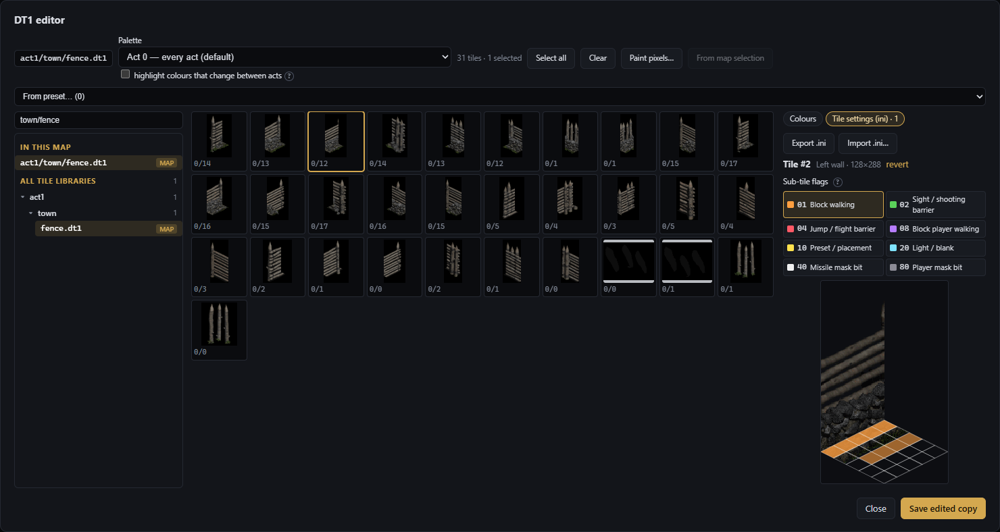
The Tile settings (ini) tab edits everything a DT1 Tools .ini holds for each tile — kind, main/sub index, rarity/frame, animated, footstep sound, roof height, direction — for one tile or many at once, each with an explanation on hover. The sub-tile flags are painted on the tile's 5×5 grid. Export .ini / Import .ini exchange settings with DT1 Tools.
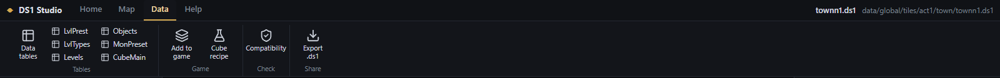
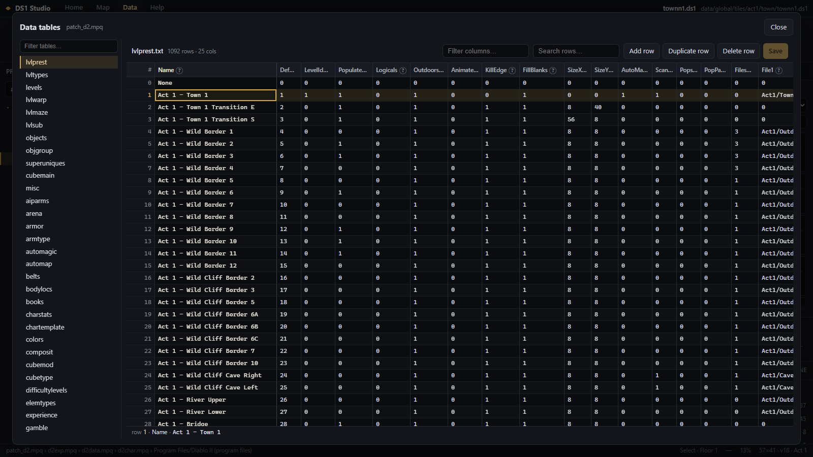
Browse and edit any .txt table of the game in a spreadsheet view. Column headers have a ? explaining what the column does. The shortcuts (LvlPrest, LvlTypes, Levels, Objects, MonPreset, CubeMain) jump to the open map's row where there is one. Saving writes the table into your mod.
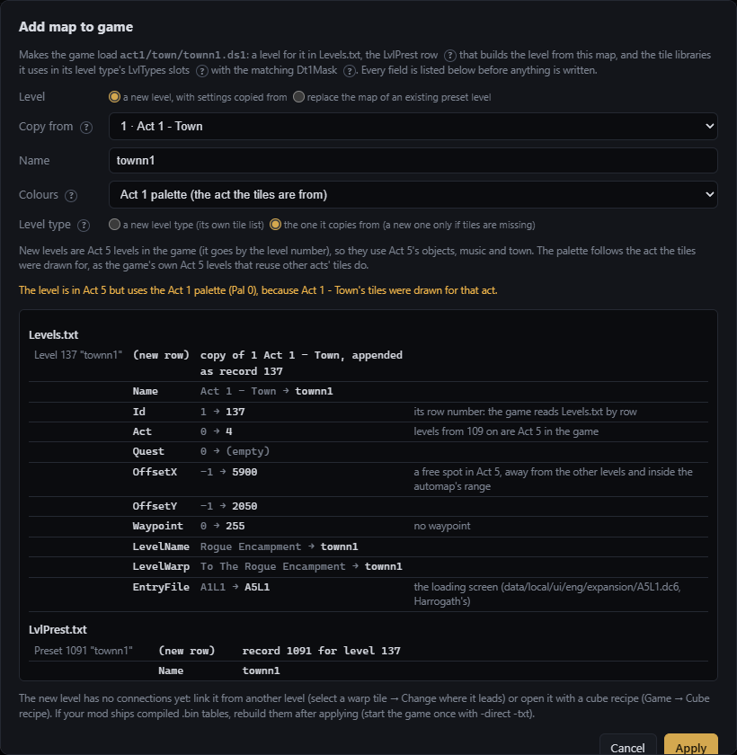
Makes the game load the open map. The dialog lists every field it will write, with the old value, the new value and the reason, before you click Apply. There are two ways to add a map:
Levels.txt row is added as the next record, and its LvlPrest.txt row points at the map.LvlPrest row is pointed at the map. Only preset levels can do this: levels the game builds at random don't load a single map.Either way, the tile libraries the map uses go into free File slots of the level type (LvlTypes.txt), and the preset's Dt1Mask selects them. The rules it follows come from the game's own code and tables:
| Rule | Why |
|---|---|
New rows are always added at the end: a level's Id, a preset's Def and a level type's Id equal their row number. The Expansion line doesn't count. | The game reads these tables by row position. A row inserted in the middle shifts every level after it. |
A level uses the first LvlPrest row with its LevelId. | A second row for the same level is ignored, so an existing level is changed through its own row. |
New levels are Act 5 (Act 4). | The game takes the act from the level number: 109 and up is Act 5. That sets the objects, music and town. |
Pal = the act the tiles were drawn for (you can change it). | Pal picks the colours. The game's own Act 5 levels that reuse Act 1, 2 and 4 tiles do this. |
SizeX/SizeY (all difficulties) = the map size minus one. LvlPrest SizeX/SizeY stay 0. | As in every preset level of the game. The preset then fills the level. |
OffsetX/OffsetY at a free spot. New Layer (automap). Quest requirement, waypoint (255), links (Vis 0 / Warp −1) cleared. | Levels of one act share a world and must not overlap. The copied level's quest lock or waypoint would otherwise carry over. |
FillBlanks 1, Scan 1, AutoMap 0, Files 1. Populate/Outdoors/KillEdge as the copied level's preset. Pops/PopPad for roof hiding. | Scan finds warps and special tiles. AutoMap 1 would reveal the whole automap on entry, as in towns. |
| Tile and map paths are at most 41 characters. | The game adds DATA\GLOBAL\TILES\ in front, in a 60-byte buffer. The game's own longest path is 40. |
The Compatibility check checks the same rules for any map already in the game, and offers one-click fixes: rows out of order (put back in Id order; no Id changes), a preset pointing at a missing level, the level size, act, palette, an overlapping position, the file count and a copied quest requirement. A new level has no connections yet: link it with warps or open it with a cube recipe. Set the DS1 header to Act 5 (the check offers it), so the map's object numbers are read as Act 5 objects.
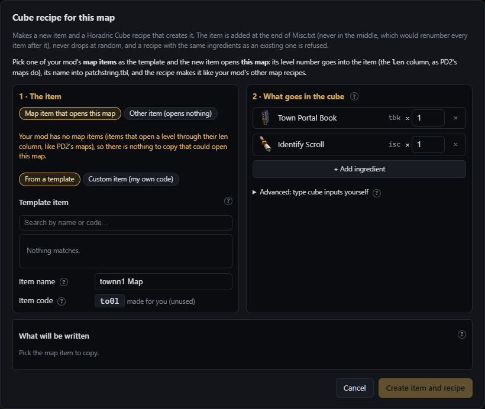
Creates a new item and a Horadric Cube recipe that makes it. Pick the template item and the ingredients from lists with icons, or type your own item code (checked against the game's items). DS1 Studio takes care of the rules that otherwise crash or break the game:
Misc.txt. Items are numbered by their position, so one inserted in the middle renumbers every item after it.spawnable 0, and references to the template's code (normcode…) are changed to the new code.Pick one of your mod's map items as the template; they are listed first under Map items (open a level). The new item then opens the map you have open, and DS1 Studio makes every change for it:
len set to the map's level number. PD2's map items open the level named in len: "Halls of Torture Map" has len 193, which is level 193.data/local/lng/eng): the item's name, and optionally the level's name as shown in game. Every existing string keeps its number.LevelName/LevelWarp point at that name, if you name the level.,nor, lvl, ilvl).The map must be a level in the game first. If it isn't, the dialog offers Add to game. After creating it, rebuild the .bin tables (-direct -txt) if your mod uses them.
Recipes and items DS1 Studio made are listed under Made by DS1 Studio in the dialog, where you can remove them. Remove an item only when no character holds it: a character with an item whose code is gone may not load.
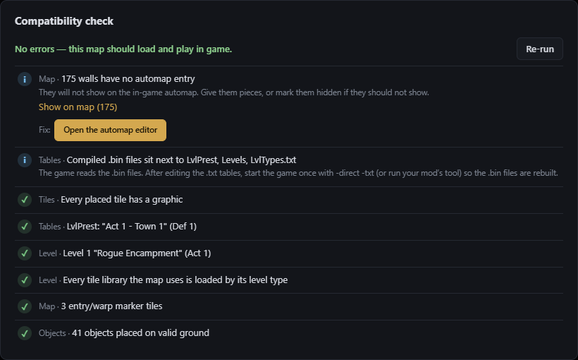
Checks the map will load and play in game: missing tiles and DT1s, table wiring, DT1s used but not loaded by the level type, entry markers, a missing waypoint, NPCs on unwalkable ground, stacked objects, walls missing from the automap, compiled .bin reminders. Most results offer one-click fixes, and Show on map marks the cells involved. Map edits made by fixes can be undone.
Ways out. A warp tile whose link has no level in Levels.txt leads nowhere; the fix opens the warp link editor for it. A level built from this map alone, with no working warp and no waypoint, can only be left by town portal (a player without a scroll or tome is stuck): Add an exit warp… opens the link editor with the act's town chosen, then gives you the warp tile to click where players should leave. Pick a Kind of warp that suits the map before applying. If leaving by town portal is what you want, ignore the warning.
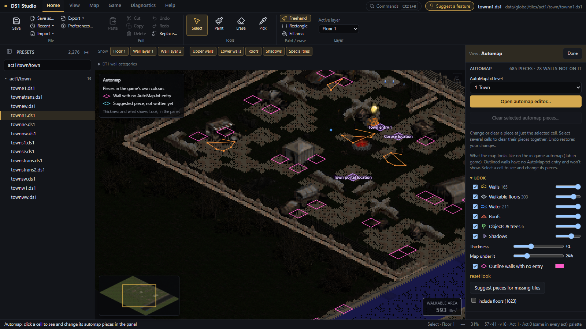
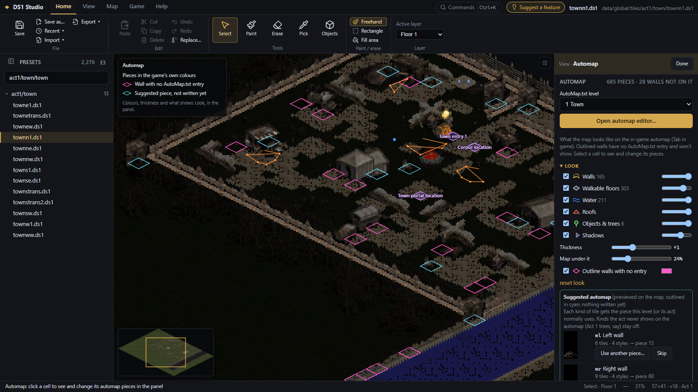
Automap (A) shows the in-game automap over the map. Walls outlined in pink have no AutoMap.txt entry, so the automap draws nothing there. Map → Automap editor lists every kind of tile the map uses with the automap piece it gets: select kinds (or click spots on the preview) and pick pieces, add random variants, hide a kind on purpose, or Suggest pieces from look-alike tiles. Nothing is written until Save to AutoMap.txt.
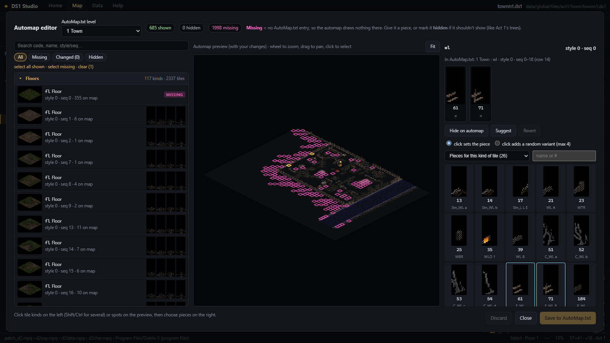
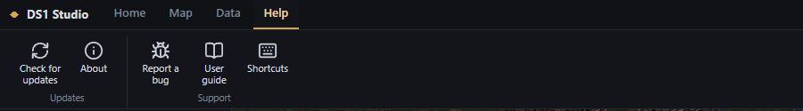
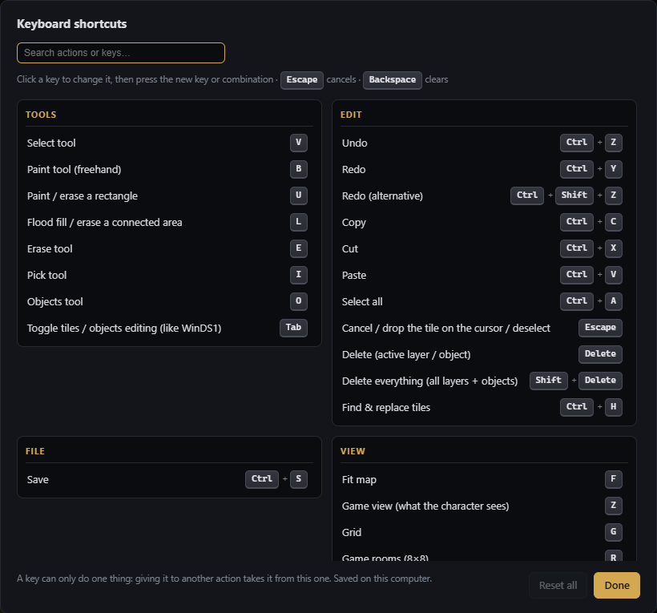
Every shortcut can be changed in Help → Shortcuts (or Home → Shortcuts): click a key, then press the new key or combination. The full list is in Appendix A.
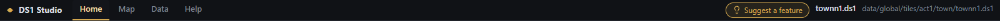
Suggest a feature (always in the top bar, and in Help) and Help → Report a bug open a pre-filled GitHub issue with your version, system and the open map. Screenshots help: paste them straight into the issue.
Help → About shows the version, build and platform, with links to the GitHub page and release notes.
.txt tables, presets. Your Diablo II install is only ever read.<name>.bak the first time, so the original survives.If part of the app fails, it shows what happened instead of a blank window, with Try again, Close this map, Report this bug (pre-filled with the error details) and Reload DS1 Studio. Your unsaved changes are kept in the autosave.
Diablo II writes every crash to a log in its folder (D2<date>.txt). Home → Crash log reads the newest crashes from your game and mod folders and says, in plain words, what they mean and what to do: a missing loading-screen image (EntryFile), a level placed too far out for the automap, AutoMap 1 on a level that isn't a town, a damaged .tbl, or a tile library, map or sprite the game couldn't open just before. The same crash repeated is shown once with a count. When the latest crash is one a map can cause, Run compatibility check finds and fixes it. Crashes it doesn't recognise are shown with where they happened, for reporting.
The game reads compiled .bin copies of the .txt tables. After changing tables (Add to game, warps, tile libraries, cube recipes…), start the game once with -direct -txt so it rebuilds them, if your mod ships .bin files.
| Question | Answer |
|---|---|
| Tiles show as red “missing” diamonds. | The map uses tiles no loaded DT1 provides. Run the Compatibility check — it offers to add the DT1s that contain them — or add them in Tile libraries. |
| My new map doesn't appear in game. | Use Add to game, connect it with a warp or a cube recipe, and rebuild .bin tables (12.3). |
| A warp leads nowhere. | Its link isn't set in Levels.txt: select it and Connect it to a level… (chapter 6). |
| Edited tiles look different in another act. | Use the Act 0 palette and Make act-safe in the DT1 editor. |
| Windows blocks the installer. | More info → Run anyway (1.1). |
Default keys; change them in Help → Shortcuts.
| Select tool | V |
| Paint tool (freehand) | B |
| Paint / erase a rectangle | U |
| Flood fill / erase a connected area | L |
| Erase tool | E |
| Pick tool | I |
| Objects tool | O |
| Toggle tiles / objects editing | Tab |
| Save | Ctrl+S |
| Undo / redo | Ctrl+Z / Ctrl+Y (Ctrl+Shift+Z) |
| Copy / cut / paste | Ctrl+C / X / V |
| Select all | Ctrl+A |
| Cancel / drop the tile on the cursor / deselect | Esc |
| Delete (active layer / object) | Delete |
| Delete everything (all layers + objects) | Shift+Delete |
| Find & replace tiles | Ctrl+H |
| Fit map | F |
| Game view | Z |
| Grid | G |
| Rooms (8×8) | R |
| Walkability | W |
| Automap preview | A |
| Object markers / sprites / NPC paths | M / N / P |
| Minimap | K |
| Roof hide areas / as if inside | H / Shift+H |
| Floor 1 / Floor 2 | 1 / 2 |
| Wall 1 – Wall 4 | 3 – 6 |
| Shadows / roofs / lower walls | 7 / 8 / 9 |
| Special tiles | 0 |
| Pan the map | Arrow keys (Shift = faster), Space+drag, middle or right drag |
| Zoom | Mouse wheel |
| Step through stacked tiles | Shift+wheel |
| Stack a paste / preset onto existing tiles | Alt+click |
| Add a tile to the random paint mix | Ctrl+click it in the Tiles panel |
| Pin / unpin a tile | Right-click it in the Tiles panel |
| Zoom tile / object thumbnails | Ctrl+wheel over the panel |
| Move the view | Click or drag on the minimap |
| Select a range of tiles (DT1 editor) | Shift+click |
B pencil · E eraser · G fill · I colour picker · [ / ] brush size · Alt+click picks a colour · Ctrl+Z / Ctrl+Y undo / redo · Ctrl+wheel zoom (8.4).
| DS1 | A map preset: a grid of cells with floor, wall, shadow and tag layers, plus objects and NPCs. The game builds levels from them. |
| DT1 | A tile library: the pictures and settings of the tiles DS1 cells refer to (chapter 8). |
| Cell | One diamond of the map grid; each layer holds at most one tile in it. |
| Main / sub index | A tile's number. A cell asks for “kind + main + sub” and the game draws the DT1 tile with those numbers. |
| Orientation (kind) | What a tile is: floor, left/right wall, corner, door, pillar/tree, roof, shadow, lower wall, special tile. |
| Variant / rarity | Several tiles can share a number; the game picks one at random, weighted by rarity. Animated tiles use it as their frame number. |
| Sub-tile flags | The 5×5 walkability grid of a tile: block walk, sight, missiles, teleport… (3.8). |
| Special tile | An invisible marker: warps, entries, corpse and portal spots (2.7). |
| Level | A row of Levels.txt: one area of the game (a town, a dungeon floor), built from DS1 presets or at random. |
| LvlPrest.txt | Lists the DS1 files, the level each belongs to, and its Dt1Mask. |
| LvlTypes.txt | Level types: up to 32 DT1 File slots each. |
| Dt1Mask | Which of its level type's DT1 slots a DS1 loads (one bit per slot). |
| Warp / link | How levels connect: Levels.txt Vis0–7 (target level) and Warp0–7 (LvlWarp row) (chapter 6). |
| Preset (DS1 Studio) | A saved piece of map you can place again (chapter 5). Not to be confused with a DS1 “map preset”. |
| Act 0 palette | The colours that look the same in every act (8.2). |
| Mod folder | Your mod's folder; everything DS1 Studio saves goes here (1.5). |
Diablo II and its data are © Blizzard Entertainment. DS1 Studio reads your own game files and never ships them. Thanks to Paul Siramy (WinDS1, DT1 Tools), the Phrozen Keep community, and Gimli for the Act 0 palette.